A mobile journaling app that externalises feelings as a virtual creature — built on Ekman's basic emotions, the Feelings Wheel, and research grounded in the mental health of Indian women aged 22-32.
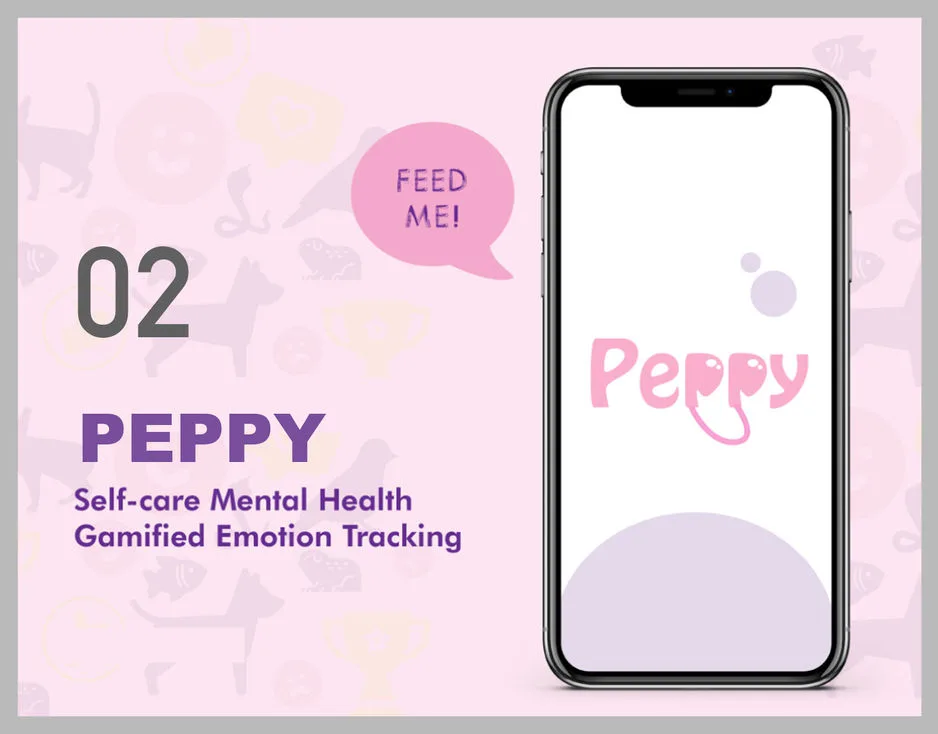
The research question started narrow and personal: can digital interventions help women cope better with the daily stresses and small circumstances of life — aiming toward better mental health? The target demographic was Indian women aged 22-32, a group sitting at the intersection of career pressure, relationship stress, and a cultural habit of under-speaking about mental health.
Inside that wedge, a repeated pattern surfaced: people know something is off, but they can't locate the feeling. The conventional journaling answer is a blank page — which is exactly the wrong UI for someone who doesn't yet have the words. "Write about your day" asks for the hardest kind of output (free-form self-analysis) at the moment when the user has the least capacity for it.
The design question reframed: instead of asking users to name an emotion and narrate around it, could the app externalise the emotion — render it as a visible object the user could care for — and let tracking become a byproduct of care?
To let users track feelings without having language for them, the app had to supply the language. Three established frameworks shaped the vocabulary:
Borrowing across these three registers — clinical (Ekman), therapeutic (Willcox), cultural (Inside Out) — gave the app a vocabulary that was scientifically grounded without feeling clinical. The UI could show a mood wheel that a therapist would recognise, using metaphors that a 24-year-old who watched Pixar movies would already have loaded.
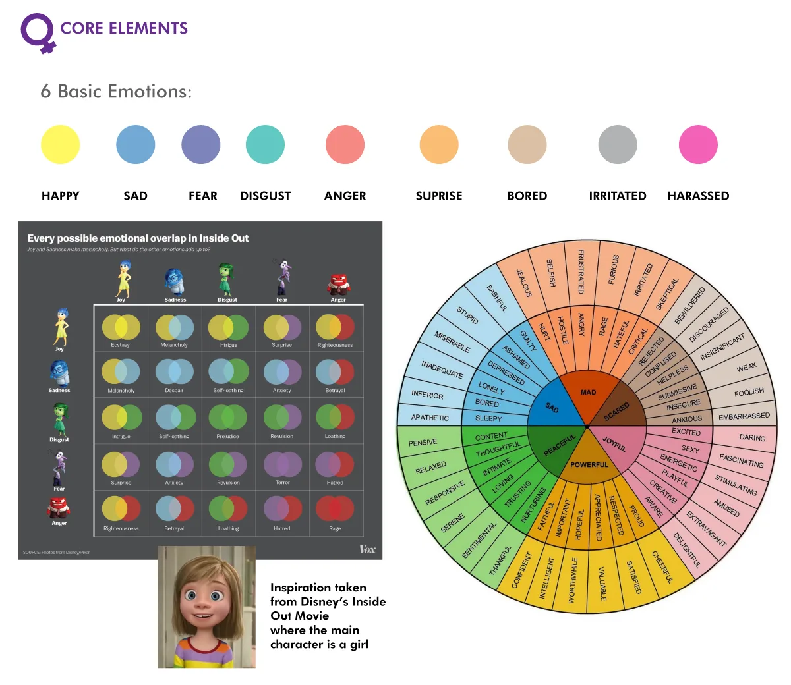
Early research produced a dense concept map — multiple angles on the same question, each grounded in a different piece of psychology or game design literature.
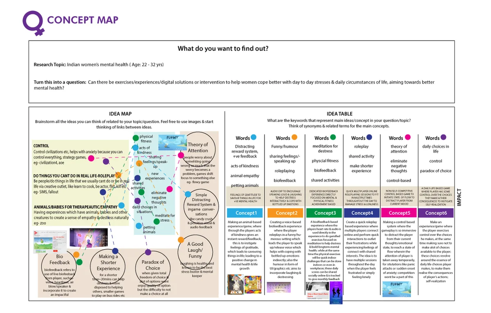
The concept map splits into two halves. On the left, a free-form Idea Map brainstorming domains: control games as anxiety reducers (Civilization, AoE), role-play as creative outlet (The Sims, Fallout), animals and babies as empathy triggers (zoo effect), Theory of Attention and focus-shifting as worry interruption (Flowy), humour as stress relief, biofeedback, acts of kindness, and the Paradox of Choice. On the right, six explicit concept candidates:
The winning direction wasn't any of the six alone — it was Concept 1 fused with tracking mechanics. An animal that registers the user's emotional state, responds to acts of kindness, and preserves the history — a Tamagotchi for the nervous system. That framing unlocks two things at once: externalisation (the pet has your feelings so you don't have to carry them) and persistence (the pet remembers, so you don't have to).
Virtual pets aren't new — the Tamagotchi (1996) is the canonical reference, and the genre has accrued decades of research on attachment, anthropomorphism, and care-giving motivation. What's new here is repurposing the mechanic for self-report tracking.
In a standard mood journal, the user is the narrator. They must name what they feel and type it. The failure mode is obvious: if you already can't name it, the blank field is intimidating. In the pet model, the user is the caregiver. The pet has a state. The user notices the state — how is it today? — and adjusts it (feeds it, plays with it, calms it, comforts it). Naming happens as a side effect of caring, not as a prerequisite.
This matters because of two well-studied phenomena:
The app is, in effect, a soft cognitive behavioural scaffold. The user tracks mood, but the interface never asks them to. They practice naming emotions, but the UI never calls it practice. They build a habit of checking in with themselves, but the habit is shaped as checking in on something else.
The final app organises around four experience zones, each serving a different psychological function and a different moment of the day.
The four zones map cleanly onto four cognitive states: setup (low-effort, one-time), reflection (daily, structured), ambient presence (frequent, low-effort), and emergency (rare, high-intensity). The design choice was to resist collapsing them into a single "journal" — the Pet House and SOS are emphatically not journaling surfaces, because forcing someone in crisis to type a reflection would be actively harmful.
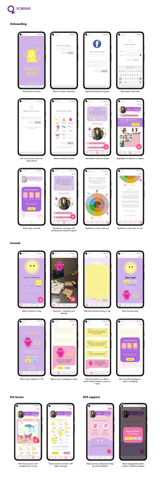
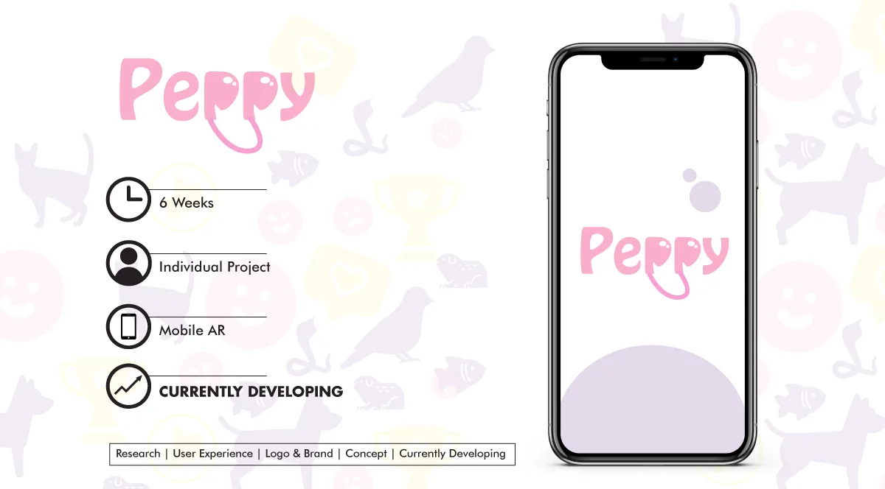
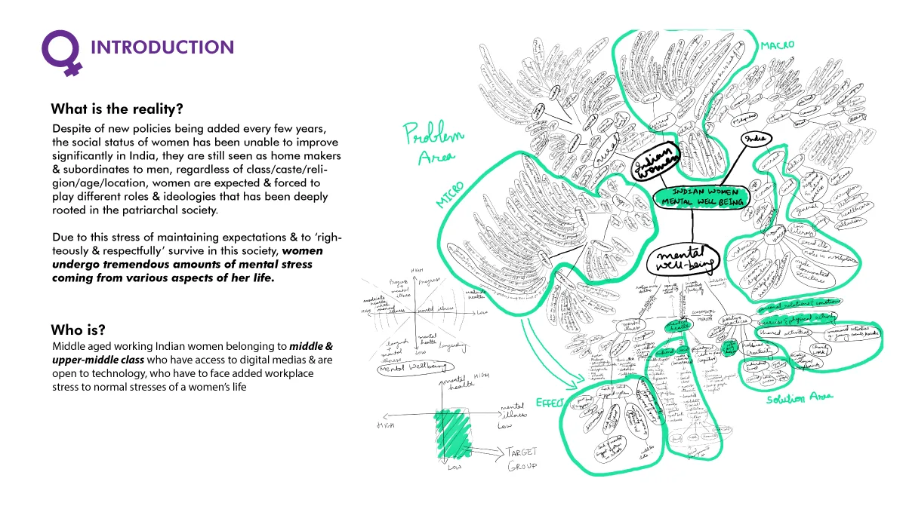
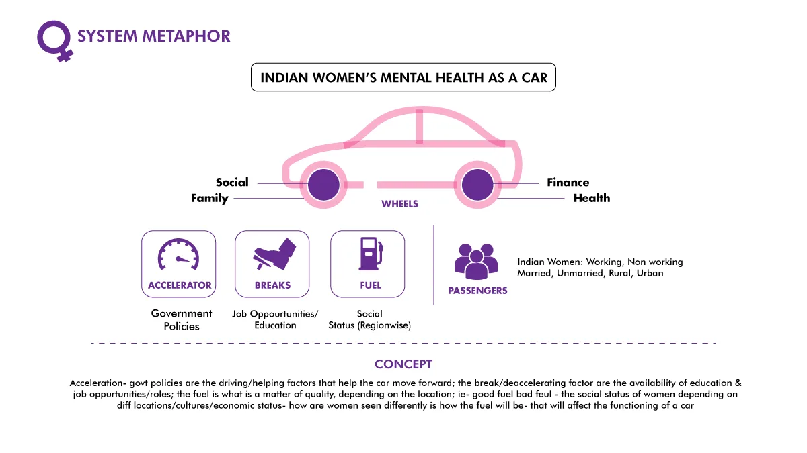
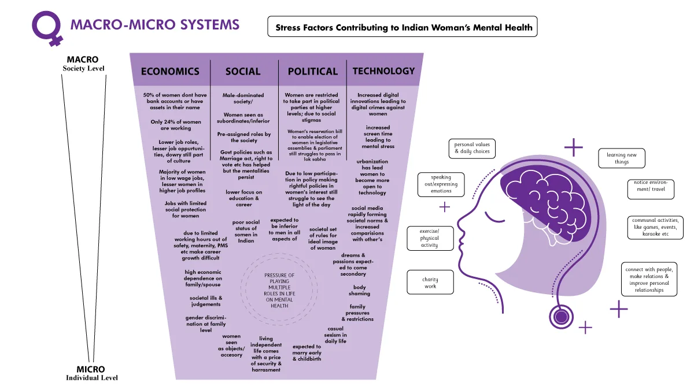
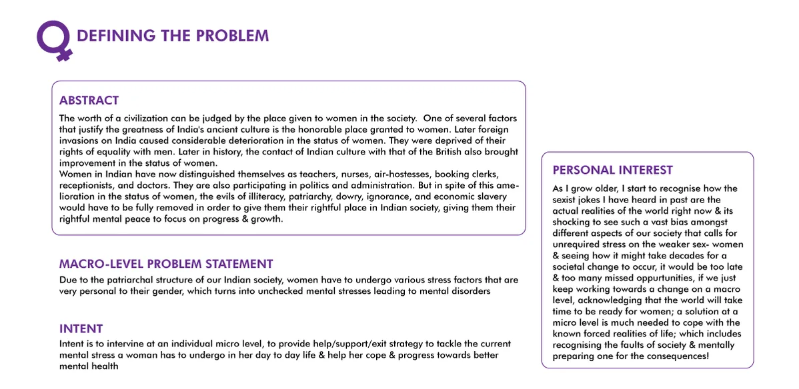
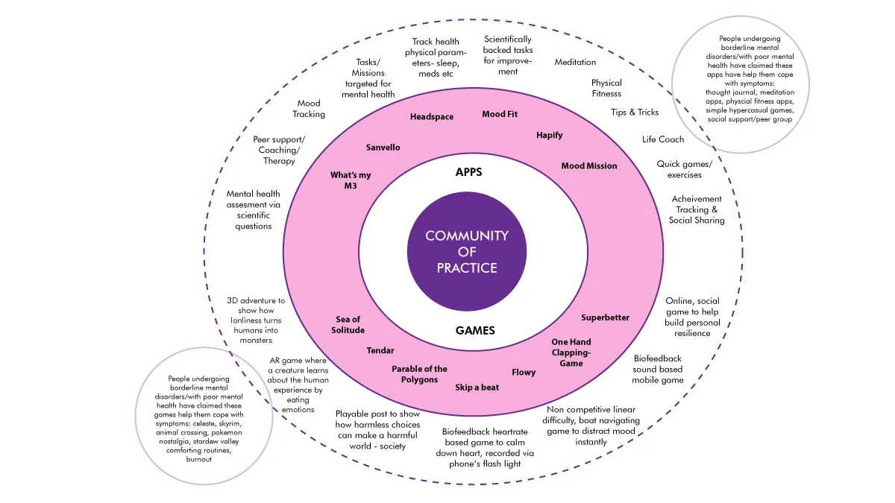
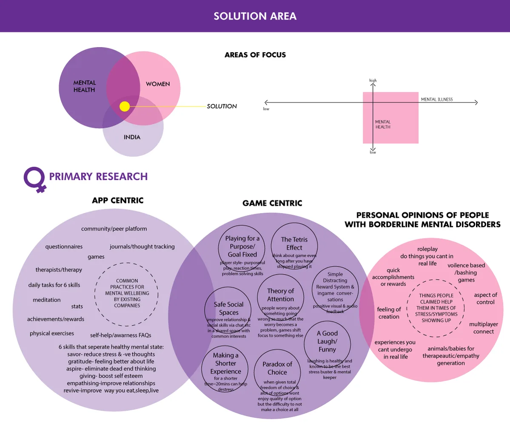
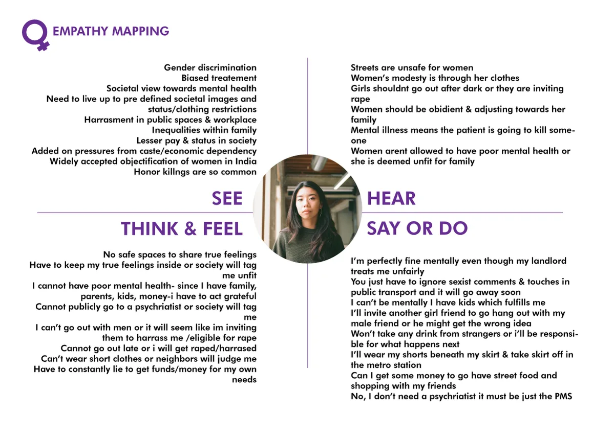
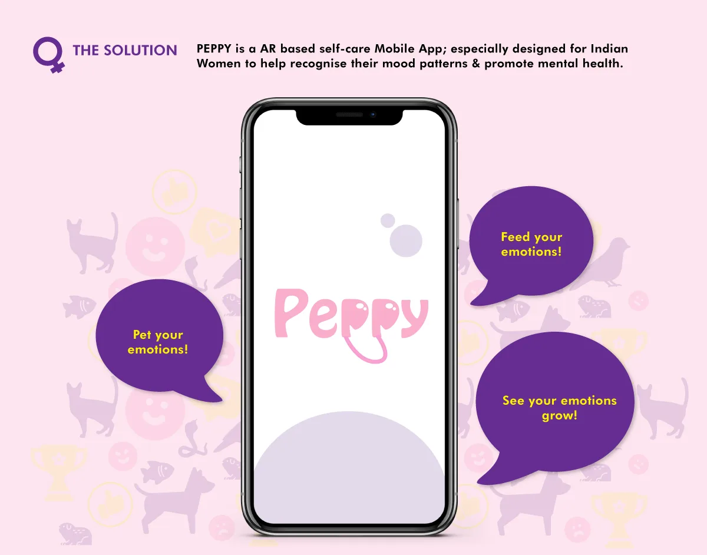
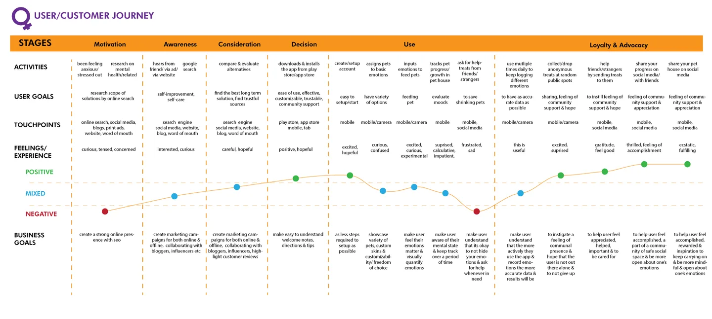
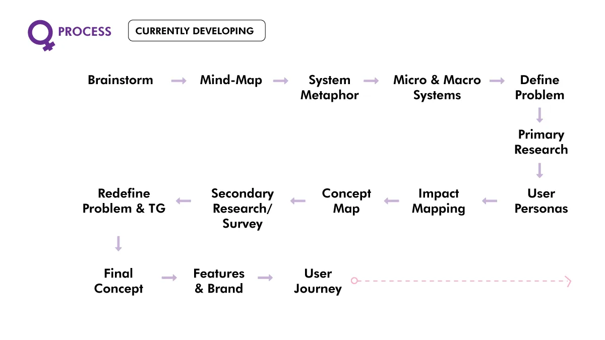
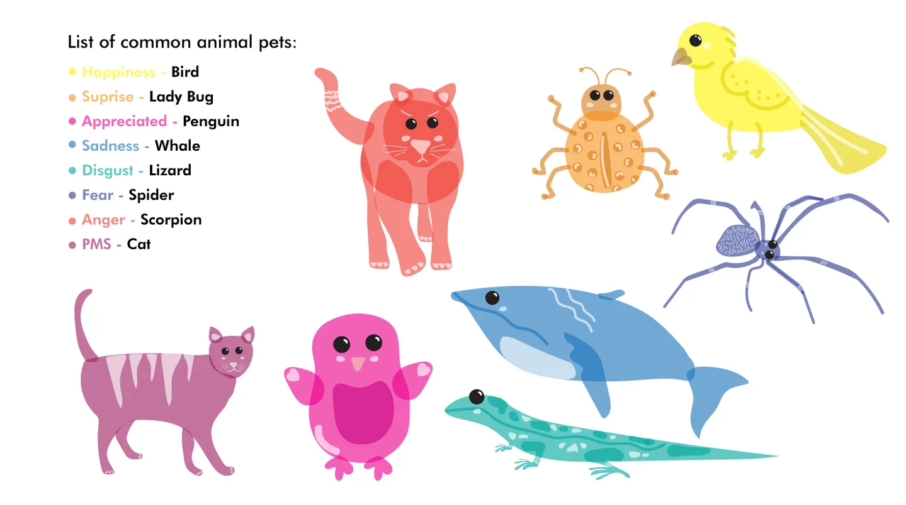
Strip the illustration and the app is doing three quiet things at once: building a vocabulary (via Ekman / Willcox), scaffolding a habit (via daily pet interaction), and preserving a history (via persistent state that outlasts any single moment of distress).
None of the three is novel on its own. Mood trackers exist. Virtual pets have existed for three decades. CBT-flavoured self-reflection apps are a crowded category. What's specific here is the routing of attention: the user is never asked to be the subject of the interaction. They're asked to be the caregiver. The tracking happens to them, as a side-effect of care.
The thesis was concept-stage — the brief was to prove out a direction, not launch a product. But the design resolves far enough down the stack that every screen in the SCREENS grid is a concrete answer to a concrete question: how do we let a user name "irritated" when they don't feel like typing? How do we let them interact with the app on a day they don't want to reflect? How do we be present in a crisis without adding friction?